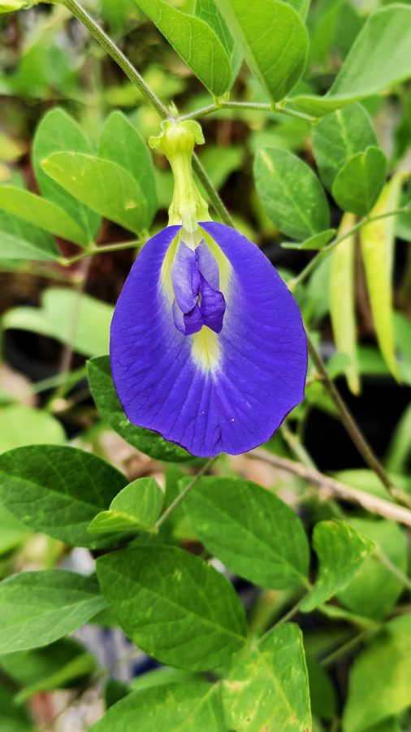

अपराजिताButterfly Pea
Clitoria ternatea · Fabaceae · FLR-0169

- Scientific name वैज्ञानिक नाम
- Clitoria ternatea L.
- Family कुल
- Fabaceae
- Hindi हिंदी
- अपराजिता
- Local names स्थानीय नाम
- aparajita, aprajita, blue pea, cordofan pea, butterfly flower
- Status here यहाँ की स्थिति
- naturalized
- Movement आवागमन
- Resident, here all year
- IUCN IUCN
- not evaluated
- Review समीक्षा
- audited and independently read
When to look कब देखें
Expected mainly in June, July, August, September, October, November, December. मुख्यतः जून, जुलाई, अगस्त, सितंबर, अक्टूबर, नवंबर, दिसंबर में अपेक्षित।
Uses and possibilities उपयोग और संभावनाएँ
“Traditional medicine” means a documented traditional use, not a claim that it works. Nothing on this page is medical advice.
Drawn from the documented uses in the profile below, where each is labelled traditional, current or a research lead. All uses →
Tell it apart from इनसे अलग पहचानें
अपराजिता / Butterfly Pea
Clitoria ternatea L. — Fabaceae
अपराजिता (गुलाब मिर्च, नीली मिर्च, विष्णुक्रांता) — बसंत-गर्मी में बागों और घरों की बाड़ी पर उगने वाली सुंदर बेल, जिसका फूल नीले रंग का और तितली जैसा दिखता है। पौधा हल्का-फुल्का, दो-तीन मीटर तक की बेल। पत्तियाँ छोटी, पंख जैसी। फूल बिल्कुल तितली की तरह, गहरा नीला (कभी सफेद भी), बहुत सुंदर। सदियों से यह फूल पूजा में चढ़ता है, विशेषकर माता के मंदिरों में। आजकल इसकी पत्तियों से नीली चाय बनती है, जो फैशन बन गई है।
Quick Identification त्वरित पहचान
| Feature | Description |
|---|---|
| Stem | Slender, twining, herbaceous, smooth, up to 2–3 m |
| Leaves | Alternate, compound, pinnate, 5–11 leaflets, 1–2 cm, linear to oblong |
| Tendrils | None; the plant twines around supports |
| Flowers | Papilionaceous, deep blue, purple, or white; solitary or in pairs; 3–4 cm across |
| Pods | Linear, 4–7 cm, containing 4–8 seeds |
| Seeds | Black or brown, smooth, 5–7 mm |
Field tip: A delicate, twining legume with feathery compound leaves and spectacular, deep blue (or occasionally white or purple) butterfly-shaped flowers. The flower is solitary or paired, appearing in leaf axils. Look for it on trellises in gardens and on hedgerows.
Morphology आकारिकी
Biometrics (typical measurements for cultivated plants in northern India):
| Measurement | Range |
|---|---|
| Vine length | 2–3 m |
| Leaf length | 5–10 cm |
| Leaflet length | 1–2 cm |
| Flower diameter | 3–4 cm |
| Pod length | 4–7 cm |
| Seed diameter | 5–7 mm |
Stems: Slender, smooth, twining (not tendril-bearing), herbaceous, green, becoming more woody at the base with age.
Leaves: Alternate, compound, pinnate, with typically 5–11 small leaflets. Leaflets are linear to oblong, 1–2 cm, with smooth margins. The petiole is short.
Flowers: Papilionaceous, the defining shape of Fabaceae. The standard petal is large and showy, typically a striking deep blue or purple, though white and pink forms exist. The wings and keel are smaller. Flowers are solitary or paired in leaf axils, opening in the morning and closing by afternoon. Both cross-pollination (by bees) and self-pollination occur.
Pods: Linear, slightly curved, green when immature, drying to brown. The interior wall is thin. Each pod contains 4–8 round to slightly flattened seeds.
Seeds: Smooth, black or brown, with a small hilum.
हिंदी: पतली बेल, तितली जैसा नीला फूल। पत्तियाँ छोटी, पंख जैसी। बीज काले।
Behaviour & Ecology व्यवहार और पारिस्थितिकी
A tropical climbing herb of South Asian origin, widely cultivated across Asia, Africa, and the Americas. Clitoria ternatea is a warm-season annual that grows from late spring through early winter, dying back after the first hard frost. The plant is a twining climber that requires a support; it can also grow as a ground cover if no support is available.
As a legume, the plant forms symbiotic associations with nitrogen-fixing bacteria in root nodules. The flowers are visited by bees and other pollinators. The small pods are not naturally eaten by livestock, so the plant persists even in grazed areas.
The plant is widely cultivated as an ornamental for its stunning flowers and also for its leaves, which are now used to produce "blue tea" (butterfly pea flower tea), a contemporary beverage gaining popularity globally.
हिंदी: गर्मियों की बेल। बेल पकड़ने वाली, दूसरी चीज़ों पर बढ़ती है। मिट्टी में नाइट्रोजन बढ़ाती है। मधुमक्खियों का पसंदीदा फूल।
Life Cycle / Phenology जीवन चक्र
| Month / Season | Event |
|---|---|
| March–May | Sowing of seeds; seed germination and seedling establishment |
| May–June | Rapid vegetative growth; vine elongation and covering support |
| June–October | Flowering; continuous bloom if water is adequate |
| July–November | Pod maturation; seed ripening and dispersal |
| December onwards | Plant decline; frost damage and death |
From germination to first flower: 8–10 weeks. The plant blooms prolifically throughout the warm season, producing dozens of flowers.
हिंदी: अप्रैल-मई में बीज, जून से सितंबर तक फूल, अक्टूबर-नवंबर तक फल और बीज।
Associated Species / Interactions संबंधित प्रजातियाँ
- On trellises: Often grown alongside Pointed Gourd, Ivy Gourd, and other climbing vegetables.
- Garden companions: Common in homestead gardens (bari) with marigold, basil, and other ornamentals.
- Pollinator support: The flowers attract Dwarf Honey Bee and other bees.
Pests and Diseases कीट और रोग
- No significant pests or diseases in most regions.
- Leaf-eating insects may cause minor damage in some seasons, but the plant recovers quickly.
- Powdery mildew may occur in humid conditions but is usually not serious.
Agricultural / Human Relevance कृषि प्रासंगिकता
Sacred and cultural use: Clitoria ternatea has a long recorded place in Hindu and Buddhist traditions. The flower, known as aparajita (meaning "invincible" or "unconquerable"), is offered to the deity during puja (worship), particularly in temples dedicated to goddesses and in Devi worship. The flower is considered auspicious and is used in garlands during festivals. In Ayurvedic tradition, it is associated with strength and spiritual power.
Dye use: The blue pigment in the flowers — an anthocyanin — has been extracted and used traditionally to dye textiles and in manuscript illumination. The color is fast and produces a range of blue shades depending on mordant and pH.
Contemporary use — blue tea: In recent years (2010s onwards), the flower petals have become popular in the global wellness and tea industries. The dried flowers are brewed to produce "blue pea flower tea" or "butterfly pea flower tea," which is caffeine-free, has a subtle floral taste, and exhibits a dramatic color shift from blue to purple when acidic ingredients (lemon, lime) are added. This is due to the pH-dependent behavior of the anthocyanin pigment. The beverage is marketed as containing antioxidants and is used in contemporary cuisine, cocktails, and wellness products.
Traditional medicine: In Ayurvedic and traditional South Asian medicine, the leaves and flowers are recorded as cooling (shita) and used to treat inflammatory conditions, skin ailments, and fever. Chopra et al. (1956) lists the plant as having medicinal properties related to cooling and strengthening. The root is sometimes used in traditional formulations.
Nitrogen fixation: As a legume, the plant contributes nitrogen to garden soils, making it useful in organic and sustainable farming systems.
हिंदी — पूजा: अपराजिता का फूल देवी को प्रिय है। गुलाब-मिर्च के फूल मंदिरों में चढ़ते हैं और विजय, शक्ति का प्रतीक हैं।
हिंदी — रंग: पत्तियों से नीला रंग निकलता है, कभी पारंपरिक रंगाई में काम आता था।
हिंदी — आजकल: अब इसकी पत्तियों की चाय बनती है, जो फैशन बन गई है। नीली चाय कहते हैं, नींबू डालने से बैंगनी हो जाती है।
Expected Locally स्थानीय रूप से अपेक्षित
Not a field record. Written from published accounts for eastern Uttar Pradesh. No confirmed local sighting yet — if you have seen it, that is what the atlas needs.
अभी तक स्थानीय पुष्टि नहीं। यह विवरण प्रकाशित स्रोतों से है, किसी अवलोकन से नहीं।
Expected as a cultivated plant in homestead gardens, temple courtyards, and on decorative trellises throughout Basti district. The distinctive blue flowers are highly visible during the flowering season (June to November). Local knowledge of its use in worship and traditional medicine would be valuable to record.
Distribution वितरण
Global range: Native to South Asia; now cultivated throughout tropical and subtropical regions of Asia, Africa, Americas, and Australia.
In India: Widely cultivated as an ornamental and medicinal plant throughout the country, particularly in the Indo-Gangetic plain.
In Uttar Pradesh: Common in gardens and cultivated areas throughout the state.
In Basti district / eastern UP: Expected as a cultivated ornamental and medicinal plant in homestead gardens and temple areas.
Research Questions शोध प्रश्न
Anyone can investigate these | कोई भी इन प्रश्नों की जाँच कर सकता है
- Which temples or sacred sites in your area use aparajita flowers in worship, and when? / आपके इलाके के कौन से मंदिरों में अपराजिता के फूल चढ़ते हैं? — Visit temples; interview priests; photograph flowers in use.
- How does the color of aparajita tea change as you add lemon or lime, and at what pH does the shift occur? — Make blue tea; add acidic ingredients; measure pH.
- Do bees visit aparajita flowers more often in morning or afternoon? — Observe flowers for 30 minutes in the morning and again at 2 PM; count bee visits.
- Can the blue dye from aparajita flowers be extracted and used to dye cloth? / क्या अपराजिता के फूल से नीली रंग निकालकर कपड़े रंग सकते हैं? — Extract dye; test on cloth; document the process.
- How much fresh leaf material can be harvested from one plant over a season, and what is the dry-leaf yield? — Monitor one plant; weigh fresh and dried leaves.
Similar Species मिलती-जुलती प्रजातियाँ
| Species | How to tell apart | हिंदी |
|---|---|---|
| Ivy Gourd (Coccinia grandis) | Smaller flowers (1–1.5 cm), pale yellow, not blue; fruits are small green berries | कुंदरू — छोटे पीले फूल |
| Wild pea (Lathyrus spp.) | Smaller flowers; leaflets more numerous; differently shaped pods | जंगली मटर — छोटे फूल |
| Indigo (Indigofera tinctoria) | Leaflets more numerous and smaller; pink or purplish flowers; pods are small | नील — छोटी पत्तियाँ, गुलाबी फूल |
Field rule: A twining legume with small pinnate compound leaves, solitary or paired, deep blue papilionaceous flowers opening in the morning, and a long period of continuous bloom from summer to early winter is aparajita.
Taxonomy & Classification वर्गीकरण
Original description. Described by Carl Linnaeus in 1753 in Species Plantarum. The genus name Clitoria is derived from the Greek kleitoris (meaning "to shut or close"), referring to the flower bud. The specific name ternatea refers to the island of Ternate (Ternaten) in Indonesia, where the plant was thought to originate or be prominent.
Subspecies. Monotypic — no subspecies are currently recognised.
Family and order placement. Fabaceae, order Fabales. The family includes all legumes. Clitoria is a small genus with 3–4 species, mostly in tropical regions.
Phylogenetic notes. Clitoria ternatea is closely related to Clitoria mariana (a North American species) and other tropical American and African Clitoria species.
IUCN status rationale. Not evaluated. Widely cultivated; not assessed for conservation status.
Photo Gallery फोटो गैलरी
Photos needed आवश्यक फोटो
- [ ] Vine with blue butterfly-shaped flowers
- [ ] Close-up of a single flower showing papilionaceous form
- [ ] Flowers being used in temple worship
- [ ] Blue tea (butterfly pea flower tea)
No photos yet — add field photos to media/species/aparajita/ and run node scripts/sync_photos.js.
References संदर्भ
- Linnaeus, C. (1753). Species Plantarum. Laurentii Salvii, Stockholm, Vol. 1, p. 910.
- Hooker, J.D. (1875). Flora of British India, Vol. 2. L. Reeve & Co., London.
- Kirtikar, K.R. & Basu, B.D. (1935). Indian Medicinal Plants, Vol. 2. Lalit Mohan Basu, Allahabad.
- Chopra, R.N., Nayar, S.L. & Chopra, I.C. (1956). Glossary of Indian Medicinal Plants. CSIR, New Delhi.
- Peixoto, H., Wang, X., Krstin, S. & Wink, M. (2018). Anthocyanin-rich extract of Clitoria ternatea L. flower petals improves antioxidant and radical scavenging capacity in mice. Journal of Functional Foods 41: 154–160.
- GBIF Occurrence Data — Clitoria ternatea, India (2015–2026).
Source file: species/flora/climbers/aparajita.md